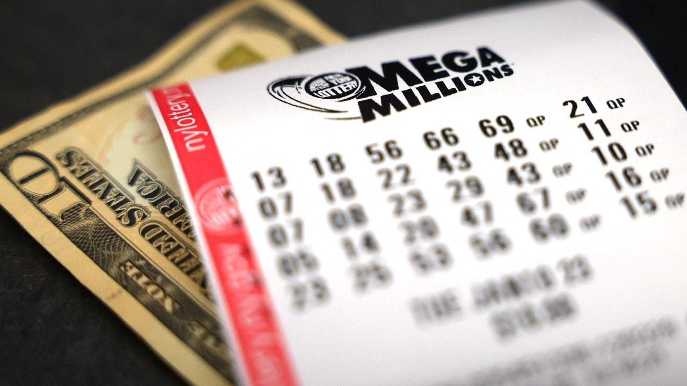

‘I was in shock!’A Michigan woman recently won $3 million on a lottery ticket that she purchased on vacation. Canton resident Reagan Blanton, 52, was off from work when she purchased a Mega Millions lottery ticket with the numbers 12-24-46-57-66 back in the fall. "I was on vacation and saw the Mega Millions jackpot was getting up there, so I made a mental note to purchase a ticket online when I got home," Blanton told Michigan Lottery Connect. When she missed the October 6 drawing, she decided to log onto the lottery's website to see what the winning numbers were. "A few days after the drawing, I remembered I hadn’t checked my ticket, so I logged in to my lottery account to see if I won anything," she continued. When Blanton saw that she was a winner, she was in disbelief. Not only did she win $1 million from her numbers, but the lottery's Megaplier option tripled the prize to $3 million. "When I saw a $3 million prize pending, I couldn’t believe what I was seeing!" the Michigan resident said. "I showed my husband, and he didn’t believe it was real either, so I called the lottery to double-check." "When the lottery employee confirmed I really did win, I was in shock!" Blanton told the Michigan Lottery that she plans to invest the cash. She recently picked up the money, the Michigan Lottery Connect reported. |
 |